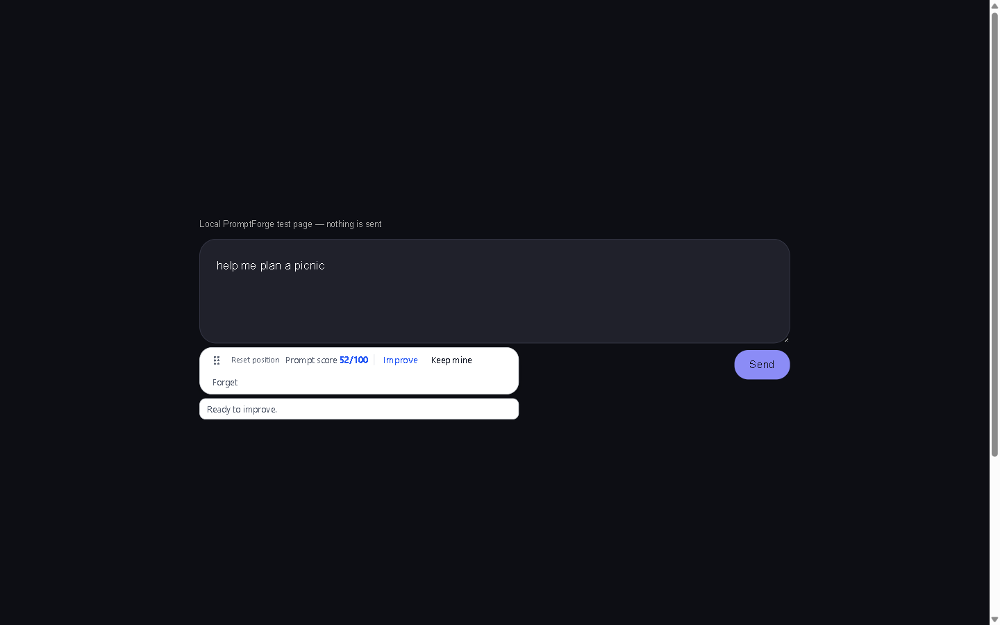

Yash Khairwal / Engineering with intention
Ideas become
working proof.
Full-stack systems, thoughtful AI, and interfaces you can actually try. Follow the evidence from first idea to working product.
B.Tech AI & Data Science, 2026
React / TypeScript / Python / three.js
PromptForge / Real extension, real capture
02 Selected work
Different problems.
One way of thinking.
Four different challenges. One approach: find the human problem, build the system, and leave proof you can inspect.
- 01 PromptForge Scores a prompt inside the chat box, improves it with a local model, never presses Send. Chrome extension · tested
- 02 DO An assistant that turns a request into a plan, then waits for your approval. Agent UX · simulation
- 03 FinPulse X One week of spending. One number first, and every view adds up to it. Data UI · illustrative
- 04 SteadyNest An exploratory Delhi atlas: real mapped footprints, illustrative heights and an interactive route study. 3D atlas · concept
03 PromptForge · Chrome extension
Weak prompt in. Sharper prompt out.
PromptForge sits under ChatGPT-style chat boxes. It scores your draft as you type, rewrites it on request with a local model or your own provider, and then stops. You review it. You press Send.
- The problem
- A vague prompt gives the model too little to work with.
- What I built
- An in-composer scorer and opt-in rewrite flow, with local-model support.
- The evidence
- 52 to 64 on the captured draft. 473 of 475 tests passing on the last recorded run.
- 475
- automated tests in the suite
- 473/475
- passing on the last recorded run, 10 Nov 2026
- 52 → 64
- prompt score on a sample draft after Improve
- 0
- messages sent for you. Send stays yours.

Try the idea
Demo scorer for this page, not the extension
- Role
- Task
- Context
- Limits
- Format
- Example
TypeScriptWXTChrome MV3OllamaStreaming
04 DO · Agent UX
AI can answer. Can it act, with your say?
Six loose asks become one braided plan. DO shows every step before anything runs, then waits. Hold to approve, let go to cancel, and the receipt says exactly what happened.
- The problem
- An assistant that acts too early takes control away from its user.
- What I built
- A plan, an explicit approval gate, cancellation, and a receipt.
- The evidence
- Try the browser simulation below. Release early and the action stays cancelled.
“Pay the electricity bill.”
- Read the last bill amount ₹1,240 · sample
- Use the saved payment method UPI · sample
- Wait for the receipt then stop
Press and hold for about one second. Releasing early cancels. Keyboard: hold Space or Enter.
Intent parsingPlan previewExplicit approvalCancel-safe
01 What I do
One person. The whole stack of an idea.
From the model call to the last pixel. I scope it, design it, build it, test it, and hand it over with proof of what works and what does not yet.
-
A
AI engineering
LLM features that stay useful and safe: local models through Ollama, OpenAI-compatible APIs, prompt scoring, speech, and approval gates before any action.
-
B
Frontend engineering
Interfaces with care in the details: typed components, keyboard and touch paths, reduced-motion versions, and motion that explains instead of decorates.
-
C
Creative development
3D and scroll stories on the web. The floating objects on this page are built in three.js from my own project data: real Delhi footprints, the real 52 to 64 score, a live spending chart.
-
D
Full-stack and tooling
APIs, browser extensions and the unglamorous parts done properly: tests, builds, deploy previews and a handoff someone else can run.
07 How I work
From brief to build, with proof.
- 01
Scope
A one-page brief: who it is for, what done means, what is out.
- 02
Design
The story and every state, including empty, error and slow, before the pixels.
- 03
Build
Small slices, each one working end to end, in a branch you can preview.
- 04
Prove
Tests, captures and honest notes on what is not done yet.
- 05
Hand over
Files, run steps and a decision log, so nothing depends on me.
08 Toolbelt
Tools I have shipped with.
Languages
Python, TypeScript, JavaScript, HTML, CSS, GLSL
AI
Ollama and local models, Groq and OpenAI-compatible APIs, Whisper speech-to-text, prompt scoring and evaluation
Frontend
React, Vite, three.js, GSAP, Lenis, accessible components, responsive layout
Platform
Node.js, Chrome extensions (MV3, WXT), Git and GitHub, Cloudflare Pages
09 About
Hi, I am Yash. I like ideas that work.
I am a final-year B.Tech student in AI and Data Science at GTBIT (GGSIPU), New Delhi. The part I enjoy most is the moment a vague idea turns into something a person can actually use: an assistant that waits for your yes, a chart that adds up, an extension that improves a prompt without sending it.
I work as a solo builder with AI tools in the loop, and I keep myself honest with tests, screenshots and plain notes on what is unfinished. I would rather show a working simulation clearly labelled than a mockup that pretends.
- Based in
- New Delhi, India (IST)
- Education
- B.Tech, AI and Data Science, GTBIT / GGSIPU, 2022 to 2026
- Looking for
- AI engineer, frontend and full-stack roles, and internships
- Works best on
- AI features with real UX, interactive web, 3D and motion
A conversation is a good beginning.
Let’s build what’s next.
A difficult problem. A detail worth getting right. From the first question to a working product. Hiring for an AI, frontend or full-stack role, or an internship? Send me a message.